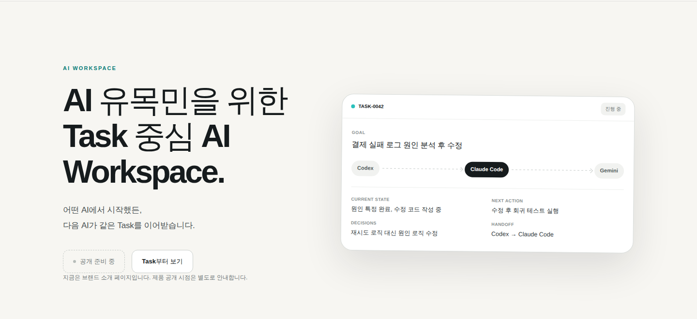
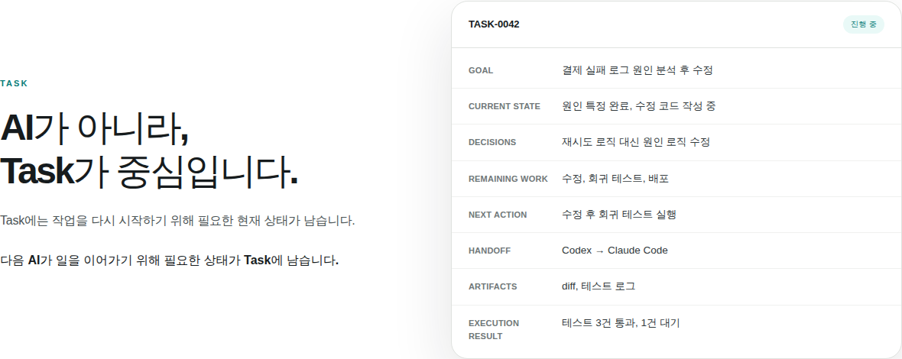
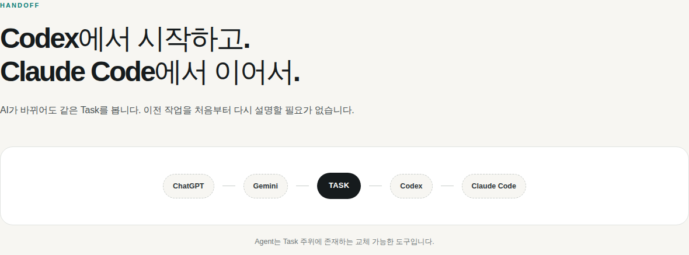
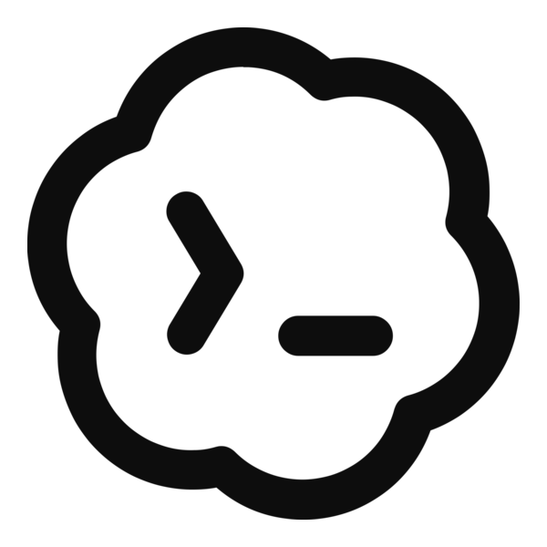

여러 AI를 오가는 사람을 위한 제품
AI Workspace는 ChatGPT, Gemini, Codex, Claude Code처럼 서로 다른 AI를 상황에 따라 옮겨 다니며 쓰는 사람을 위해, 작업의 목표와 현재 상태를 Task 하나에 남깁니다. 그 대상을 처음 보는 사람에게 짧게 설명할 방법이 필요했습니다.
AI Workspace는 Discord를 통해 여러 AI에게 작업을 나눠 맡기고, 그 결과를 Task 하나로 관리하는 개인 제품입니다. 제품은 이미 만들어지고 있었지만 외부에 보여줄 얼굴이 없었습니다. 이번에는 그 얼굴, 브랜드 사이트를 만든 과정을 정리했습니다.
2026.08 · 브랜드 사이트 v1 제작 완료 · 제품 배포 전

이 프로젝트는 '없던 기능을 만드는 일'이 아니라 '이미 있는 원칙을 사이트 한 장으로 옮기는 일'이었습니다.
AI Workspace는 ChatGPT, Gemini, Codex, Claude Code처럼 서로 다른 AI를 상황에 따라 옮겨 다니며 쓰는 사람을 위해, 작업의 목표와 현재 상태를 Task 하나에 남깁니다. 그 대상을 처음 보는 사람에게 짧게 설명할 방법이 필요했습니다.
이 제품은 예전에 "Task OS" 같은 더 큰 포지셔닝을 검토했다가, 근거가 부족하다는 이유로 스스로 반려한 적이 있습니다. 사이트를 새로 쓰면서도 그 반려 이유를 다시 지키는 것이 먼저였습니다.
"Task 중심 컨텍스트 관리" 대신 "AI를 바꿔도, 하던 일은 그대로"처럼, 기능을 설명하기보다 사용자가 느끼는 변화를 먼저 말하도록 8개 섹션 전체를 한 메시지씩으로 제한했습니다.
제품이 아직 공개 전이라 보여줄 실제 화면이 없었습니다. 가짜 스크린샷을 만드는 대신, Task가 여러 AI 사이를 이동하는 구조 자체를 절제된 다이어그램으로 보여주는 쪽을 택했습니다.
프레임워크 없이 순수 HTML·CSS·JS로 만든 정적 브랜드 사이트입니다. 실제 제품 화면 대신, Task가 중심이 되는 구조를 세 개의 다이어그램으로 보여줍니다.


이번에는 브랜드 사이트를 만들기 전에, Claude Code가 관련 레포 세 곳(AI Workspace 본체, 참고 사례인 Think2Brief 사이트, 이 포트폴리오)을 먼저 조사했습니다. 그 결과 프롬프트에 없던 사실 두 가지를 발견했습니다 — 이번 사이트가 붙을 위치는 별도 정적 사이트여야 한다는 것, 그리고 예전에 "Task OS"라는 더 큰 포지셔닝이 근거 부족으로 반려된 적이 있다는 것이었습니다.
프롬프트를 그대로 옮기지 않고, 실제 코드베이스와 어긋나는 지점부터 먼저 질문으로 되돌려줬습니다. CTA 버튼이 아직 어디로도 연결될 수 없다는 점, 보여줄 실제 제품 화면이 없다는 점이었습니다. 두 질문 모두 준비되지 않은 것을 준비된 것처럼 만들지 않기 위한 것이었습니다.
사이트를 만든 뒤에는 완성 보고로 끝내지 않고 Playwright로 실제 브라우저에 띄워 확인했습니다. 스크롤 애니메이션, 모바일 화면, 그리고 자바스크립트를 끈 상태까지 — 그 과정에서 스크롤 애니메이션에 기대는 콘텐츠가 자바스크립트 없이는 계속 보이지 않는 상태로 남는 결함을 발견해 수정했습니다. "만들었다"와 "확인했다"를 같은 것으로 두지 않는다는 태도는, 이 사이트의 EVIDENCE 섹션이 하는 말과 같은 것이었습니다.
이 프로젝트에서 한 일 — 사이트를 쓰기 전에 레포 세 곳을 조사했고, 프롬프트와 실제 코드가 어긋나는 지점을 그대로 진행하는 대신 질문으로 되돌렸습니다.
지킨 원칙 — 예전에 반려된 포지셔닝 리뷰 문서를 다시 따라, "Task OS"나 "자동으로 검증한다" 같은 근거 없는 표현은 쓰지 않았습니다.

Codex · 2026.08.15 포지셔닝 리뷰당시 결론 — "Task-centricity와 Decision 객체는 그 자체로 유일하지 않다. 방어 가능한 방향은 더 좁다."
이번 사이트에 남은 것 — 이 결론에 따라 경쟁 우위를 주장하는 문장 없이, "Task 중심"이라는 가설 수준의 표현만 사용했습니다.
* Claude Code 코멘트는 이 프로젝트를 진행한 세션에서 정리한 것이며, Codex 발췌는 AI Workspace 레포에 실제로 존재하는 문서에서 그대로 가져온 것입니다. 각 사의 공식 입장이 아닙니다.
브랜드 사이트 v1은 완성됐지만, 제품과 배포 링크는 공개 시점에 맞춰 별도로 안내할 예정입니다.